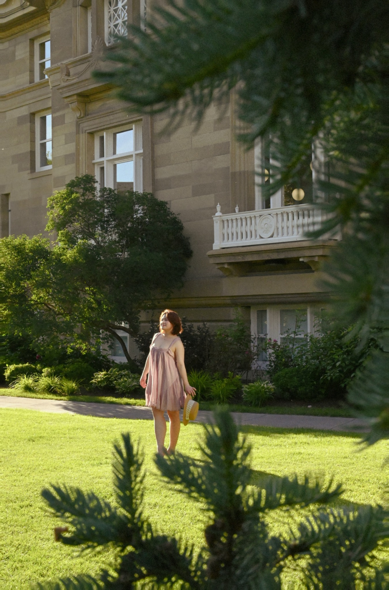
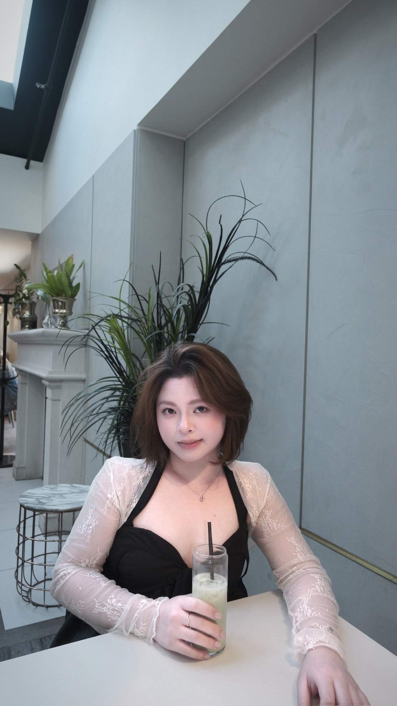
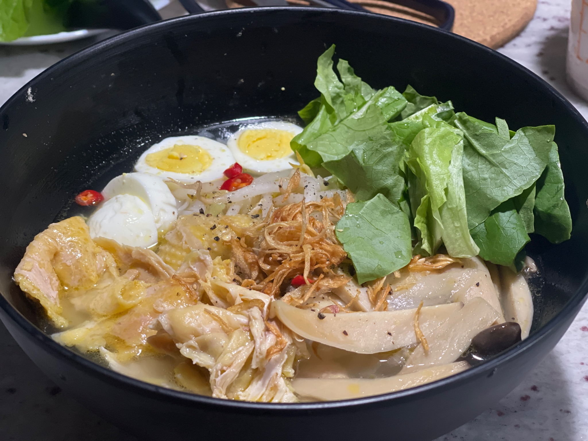

01
Finding Beauty
Through Photography
Capturing quiet moments, architecture and everyday details helps me discover stories that inspire my visual work.
About Me
My approach combines visual storytelling, thoughtful details and a genuine interest in how design helps people feel, understand and connect.

My Story
I'm a Graphic Design student based in Calgary, Canada. I enjoy building thoughtful visual experiences through branding, packaging, editorial design, advertising and digital media.
My work combines visual storytelling with clear communication. I pay close attention to typography, colour, composition and the small details that make a design feel intentional.
My goal is to create work that feels meaningful, visually engaging and easy for people to connect with.
Who Am I
This short video introduces the experiences, personality and creative perspective behind my work.
Press play to watch my “Who Am I” story directly on this page.
If the player is blocked while previewing a local file, open the website with Live Server or view the video on YouTube.
Beyond Design
Photography, cooking and travel continue to shape how I observe, create and tell stories.


Contact